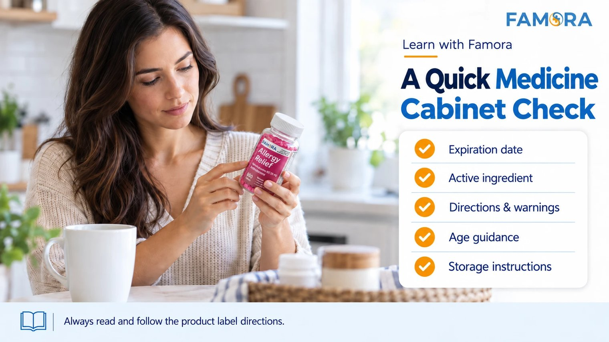

September brings changes in household routines. School schedules return, work calendars become busier, and families manage more activities and appointments. It is also a practical time to review the over-the-counter products already stored at home.
This does not mean buying medicine for every possible situation. It means checking what is in your medicine cabinet and confirming that expiration dates, labels, warnings, directions, and age guidance remain readable and relevant.
Why September Is a Good Time for a Medicine Cabinet Review
OTC products are often purchased for a specific need and then remain untouched for months. During that time, expiration dates can pass, packaging may become damaged, and household needs can change.
A seasonal check can help you avoid discovering an expired or empty bottle when someone is already looking for it. The goal is to understand what you have and make informed decisions about what should remain in your cabinet.
Start With the Medicine Expiration Date
The medicine expiration date may be printed on the bottle, label, cap, carton, tube, or another part of the original packaging. Look for terms such as “EXP,” “expiration,” or “use by.”
It represents the period during which a medicine is expected to maintain its strength, quality, and purity when stored according to the labeled conditions. The FDA explains how medicine expiration dates are established and why both the date and storage instructions matter.
Do not rely only on how a tablet or package looks. If the date is missing, unreadable, or unclear, ask a pharmacist rather than making an assumption.
Use a Simple OTC Medicine Cabinet Checklist
Review your OTC essentials one product at a time and check these details.
1. Expiration date
Separate expired products from those that remain within their labeled date. Note products approaching expiration so they can be reviewed again before future use or repurchase.
2. Original packaging
Whenever possible, keep OTC medicines in their original containers. The packaging connects the product to its Drug Facts label, expiration date, directions, warnings, and identifying information.
Loose tablets or products in unlabeled containers can be difficult to identify. If you cannot confidently determine what a product is, do not guess.
3. Active ingredient
The active ingredient is the component responsible for the medicine’s intended effect. Products with similar front-label language may contain different active ingredients or strengths.
Checking this section can also help you recognize when multiple products contain the same active ingredient. Famora’s guide on what to compare before reordering OTC medicine explains how active ingredient, count, directions, and warnings can support an informed purchase.
4. Directions and warnings
Read the directions every time, including for familiar products. Check how much to take, how often to take it, and any limits stated on the label.
Warnings may explain when not to use the product, when to speak with a healthcare professional, possible interactions, and when to stop use. Familiar packaging does not make a product appropriate for every person or situation.
5. Age guidance
A medicine kept in a family cabinet is not automatically appropriate for every adult or child. Review the exact age information, directions, and warnings.
Do not estimate a child’s amount by reducing an adult amount unless the label or a qualified healthcare professional specifically provides those instructions.
6. Storage conditions
Check the “Other Information” section for storage instructions. Temperature, moisture, light, and damaged packaging can affect how a product should be handled. Make sure its location matches the conditions on the label.
7. Remaining quantity
A bottle can be within its expiration date but nearly empty. Check how much remains rather than assuming the cabinet is fully stocked.
High-count OTC products may reduce frequent restocking, but they still require periodic review for expiration, storage, packaging condition, and household relevance.

What Should You Do With Expired OTC Medicine?
Do not automatically flush expired medicine or place it in household trash without checking the appropriate disposal instructions. Look for a local medicine take-back option, review the product information, or ask a pharmacist how to dispose of it properly.
Keep expired medicines secured and out of the sight and reach of children until they can be disposed of.
Keep Seasonal Planning Practical
Back-to-school routines and the beginning of cold and flu season can encourage households to think more carefully about preparedness. Preparation should not mean buying products without understanding them or assuming an OTC medicine can prevent seasonal illness.
Focus on knowing what is already at home, removing expired or unidentified items, keeping labels and original packaging together, and reviewing active ingredients and age guidance before purchasing or using a product.
If someone has a medical condition, takes prescription medicine, is pregnant or breastfeeding, or has questions about an OTC product, consult a qualified healthcare professional.
Make the Review a Repeatable Household Habit
September can be one reminder, but you can also check the cabinet before travel, during seasonal changes, or before reordering a product.
A few minutes spent reviewing medicine expiration dates and Drug Facts labels can make your OTC essentials easier to understand and manage.
Always read and follow the product label directions. This article is for general educational purposes and is not medical advice.
Frequently Asked Questions
A medicine expiration date identifies the period during which the product is expected to maintain its strength, quality, and purity when stored according to the conditions on its label.
The FDA recommends not using medicine after its labeled expiration date. If you are unsure about a product or need a replacement, speak with a pharmacist or qualified healthcare professional.
Review your medicine cabinet periodically and during major routine changes. September, the beginning of a new year, travel planning, and other seasonal transitions can serve as useful reminders.
The date may appear on the bottle, carton, label, cap, tube, or package seal. Look for wording such as “EXP,” “expiration,” or “use by.” Ask a pharmacist if it is unclear.
Review the active ingredient, purpose, uses, warnings, directions, inactive ingredients, storage information, expiration date, and age guidance. Read the complete label each time you purchase or use the product.